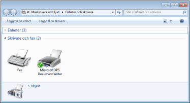

Metoden för att ta bort skrivardrivrutinen och återställa datorn till samma status som den hade innan skrivardrivrutinen installerades kallas avinstallation. Gör på följande sätt för att avinstallera skrivardrivrutinen.
1
Stäng av skrivaren och datorn om en USB-kabel är ansluten och ta sedan bort USB-kabeln.
2
Starta datorn och logga sedan in till Windows som en användare med behörigheten administratör.
3
Stäng följande filer och program om de är öppna.
Hjälpfiler
Skrivarstatusfönstret
Kontrollpanel
Andra program
4
Starta avinstallationen.
Välj [Alla program] eller [Program] → [Avinstallationsprogram för Canon skrivare] → [Avinstallation av Canon LBP6000 LBP6018] på [Start]-menyn.
 Om avinstallationsprogrammet inte finns på [Start]-menyn Om dialogrutan [Kontroll av användarkonto] öppnas Om avinstallationsprogrammet inte finns på [Start]-menyn Om dialogrutan [Kontroll av användarkonto] öppnasKlicka på [Ja] eller [Fortsätt].
|
 "
"5
Gör på följande sätt.
Om skrivaren visas
|
(1)
|
Välj skrivaren.
|
|
(2)
|
Klicka på [Ta bort].
|
Om skrivaren inte visas
Klicka på [Ta bort].
6
Klicka på [Ja].
|
→
|
Avinstallationen startar.
Vänta tills följande skärmbild stängs. (Det kan ta lång tid att avinstallera skrivardrivrutinen.)
|
|
Klicka på [Ja] eller [Ja till alla] när följande skärmbild öppnas.
|
7
Klicka på [Avbryt].
8
Öppna mappen Skrivare.
9
Bekräfta att ikonen för den här skrivaren inte hittas.

|
VIKTIGT!
|
||||
|
Om ikonen för den här skrivaren visas
|
10
Starta om Windows.
|
Avinstallera sedan e-handboken på följande sätt.
(Om du inte har installerat e-handboken behöver du inte genomföra följande åtgärder.) |
11
Sätt i den medföljande CD-ROM "User Software" i datorns CD-ROM-enhet.

12
Klicka på [Ytterligare mjukvaruprogram].
|
Om skärmen ovan inte visas Om dialogrutan [Spela upp automatiskt] öppnas Klicka på [Kör AUTORUN.EXE].
Om dialogrutan [Kontroll av användarkonto] öppnasKlicka på [Ja] eller [Fortsätt].
|
13
Klicka på [Starta] i [Manual Uninstaller].
14
Klicka på [Avinstallera] för att starta avinstallationen.
Vänta en stund tills avinstallationen är klar. (Det kan ta lång tid att avinstallera skrivardrivrutinen.)

15
Klicka på [Avbryt].
16
Klicka på [Tillbaka].
17
Klicka på [Avbryt].
 |
När följande skärmbild öppnas kan du ta ur CD-ROM.
|